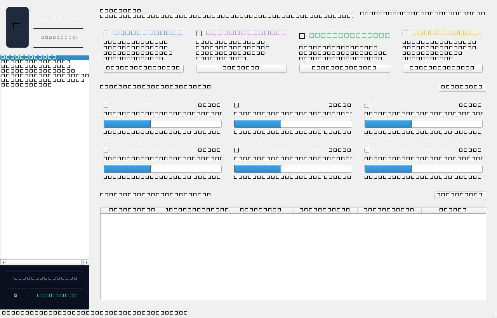

Engineered with non-destructive direct I/O read barriers, multi-filesystem metadata reconstruction (FAT12/16/32, exFAT, NTFS), and deep signature carving for USB drives, SD cards, and raw disk images.
Test our radial progress gauge, sector scanner, and file candidate extractor directly in your browser without installing anything.
| Filename | Size | Method | Integrity Status |
|---|---|---|---|
| Click "Start Simulated Cluster Scan" to initiate forensic discovery. | |||
RecoverX is not a superficial file undelete tool. It is an uncompromising forensic suite designed for damaged, corrupted, and reformatted storage media.
Direct Win32 physical block access bypasses Windows OS filesystem caching. Enforces strict zero-byte write protection; source devices cannot be modified under any circumstance.
Native, zero-dependency directory parsers for FAT12, FAT16, FAT32, exFAT stream extensions, and NTFS $MFT parsing. Reconstructs folder trees even when partition tables are destroyed.
Raw cluster stream analysis locates embedded magic signatures without filesystem tables. Structural validators verify JPEG EXIF/EOI, PNG IHDR/IEND, PDF trailers, and ZIP central directories.
Every recovered candidate is verified with SHA-256 integrity hashes. All sessions, device triage parameters, and bad sectors are recorded in an ACID-compliant SQLite WAL database.
Create forensic bit-for-bit raw disk images (`.raw`, `.img`) of dying physical drives. Automatically detects failing sectors with configurable retry thresholds and exponential backoff.
Inspect damaged photos, documents, and hex dumps in an isolated subprocess sandbox. Corrupted or malicious file formats cannot crash or compromise your host system.
A dark-neon glassmorphism GUI with high-contrast slate controls, zero-clipping layouts, and interactive telemetry gauges.

Download the official production-grade Windows setup installer. Installs in seconds, creates desktop shortcuts, and launches automatically.
See how RecoverX compares to legacy recovery tools on Windows.
| Capability / Feature | RecoverX (Forensic) | Generic Recuva | EaseUS Data Recovery |
|---|---|---|---|
| Non-Destructive Direct I/O | ✔ Enforced Barrier | ❌ No Barrier | ❌ No Barrier |
| FAT / exFAT Allocation Table Parsing | ✔ Native Drivers | Limited | Proprietary |
| Deep Structural File Carving | ✔ EXIF/EOI Validated | Basic Magic Only | Proprietary |
| Cryptographic SHA-256 Audit Trail | ✔ Tamper-Proof SQLite | ❌ None | ❌ None |
| Out-of-Process Preview Sandbox | ✔ Subprocess Isolation | ❌ Host Process | ❌ Host Process |
| License & Telemetry | ✔ 100% Free & Open Source | Freemium / Ads | $69.95/mo Subscription |
Next steps to start RecoverX:
RecoverX-Setup-v0.1.0.exe.